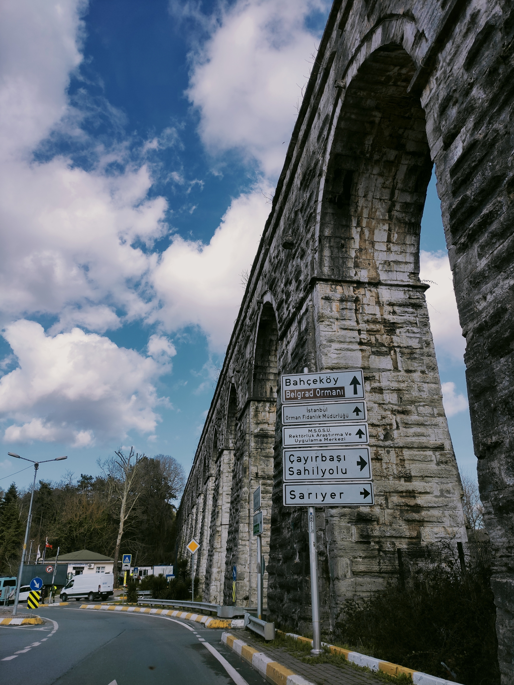
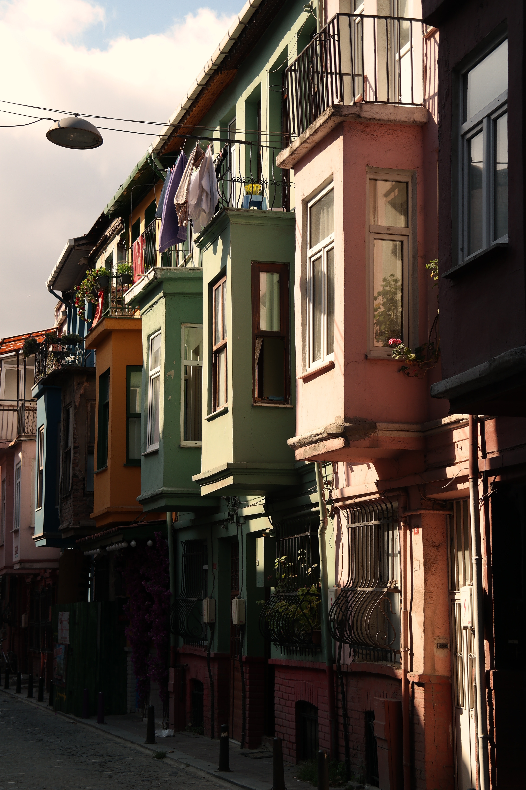

Sarıyerin Güzellikleri
Bahçeköy
Bahçeköy, İstanbul'un eşsiz semtlerinden biridir. Doğal güzellikleri, tarihi dokusu ve huzurlu atmosferiyle dikkat çeken Bahçeköy, şehrin karmaşasından uzaklaşmak isteyenler için ideal bir kaçış noktasıdır.
Bahçeköy'ün en çarpıcı özelliği, yoğun yeşil alanları ve geniş ormanlık alanlarıdır. Şehrin içinde yer almasına rağmen, burada adeta bir doğa cennetiyle karşılaşırsınız. Yürüyüş parkurları ve bisiklet yollarıyla çevrili olan Bahçeköy, doğa severler ve spor tutkunları için mükemmel bir mekan sunar.
Tarihi dokusuyla da büyüleyen Bahçeköy, Osmanlı döneminden kalma tarihi evleri ve çeşmeleriyle geçmişe yolculuk yapmanızı sağlar. Semtteki tarihi mekanları gezerken, kendinizi zamanın gerisine götürülmüş gibi hissedersiniz.
Bahçeköy'ün sakin ve huzurlu atmosferi, şehir hayatının koşuşturmasından uzaklaşmak isteyenler için bir mola noktasıdır. Şehrin gürültüsünden uzak, kuş sesleri eşliğinde piknik yapabilir, çocuklarınızla açık havada vakit geçirebilir ve stresli günlerinizi geride bırakabilirsiniz.
Çayırbaşı - Sahil

Sarıyer, İstanbul'un boğazın eşsiz güzelliklerini sunan semtlerinden biridir. Bu semtin göz alıcı sahil kesimi, Çayırbaşı Sahili olarak bilinir. Çayırbaşı Sahili, Sarıyer'in incisi olarak adlandırılan bu benzersiz bölge, deniz manzarasıyla büyüleyici bir atmosfere sahiptir.
Çayırbaşı Sahili, nefes kesen Boğaz manzarasıyla tanınır. İstanbul Boğazı'nın kıyısında yer alan bu sahil, yürüyüş ve koşu yapmak isteyenler için mükemmel bir mekan sunar. Sahildeki geniş yürüyüş parkurları, yeşillikler arasında keyifli bir gezinti yapmanıza olanak tanırken, hafif esinti eşliğinde huzur dolu anlar yaşayabilirsiniz.
Çayırbaşı Sahili, aynı zamanda deniz sporları ve plaj keyfi için de ideal bir yerdir. Sahil boyunca yer alan plajlar, yaz aylarında serinlemek ve güneşlenmek isteyenler için idealdir. Denizin tadını çıkarırken, muhteşem Boğaz manzarasıyla büyülenirsiniz.
Sokakları
Sarıyer, İstanbul'un büyüleyici semtlerinden biridir ve sokaklarıyla da kendine özgü bir atmosfer sunar. Bu semtin sokakları, tarihi dokusu, çarşıları ve canlı atmosferiyle dikkat çeker.
Sarıyer'in sokakları, taş döşeli yolları ve mimari güzellikleriyle büyüleyici bir görüntü sergiler. Eski Rum evleri, Osmanlı dönemine ait yapılar ve geleneksel Türk evleri, sokaklara karakteristik bir hava katar. Yürürken, geçmişin izlerini takip ederken ve sokaklarda dolaşırken tarihi bir atmosferin içine adım atarsınız.
Sarıyer'in sokaklarında dolaşırken, çarşıları ve pazarları keşfetmek büyük bir keyiftir. Çeşitli dükkanlar ve tezgahlar, yerel el sanatları, antika eşyalar, el yapımı ürünler ve lezzetli atıştırmalıklar sunar. Yerel esnafların samimi tavırları ve misafirperverlikleri, sokakları daha da canlandırır.